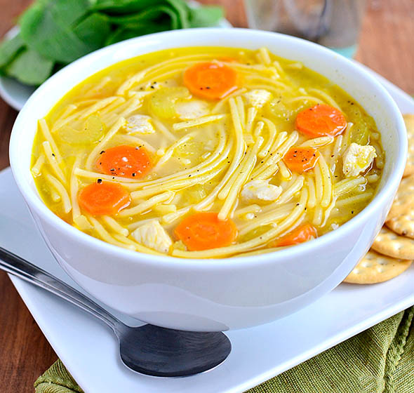

Chicken Noodle Soup

Quick easy gluten-free chicken noodle soup that warms the soul!
Homestyle chicken noodle soup that will soothe your ailments. If you like lots of noodles, use a
whole box or two! Can be frozen or double to serve a larger family!
Ingredients
- 1 tablespoon extra virgin olive oil
- 1 tablespoon butter
- 1 large carrot, peeled then sliced
- 1 stalk celery, sliced
- 1 shallot or 1/2 onion, chopped
- salt and freshly ground pepper to taste
- 2 cloves garlic, minced
- 64oz chicken broth, or more if needed
- 1 bay leaf
- 1 chicken breast, cubed
- 8 oz gluten-free spaghetti, broken into pieces
Steps
- Heat olive oil and butter in a large stock pot over medium heat.
- Add carrots, celery, garlic and shallot or onion. Season with salt and pepper. Saute
until tender, 10 minutes.
- Add chicken broth with bay leaf and bring to a boil.
- Season cubed chicken with salt and pepper.
- Add chicken and spaghetti to boiling chicken broth.
- Reduce heat from medium to simmer, stirring occasionally.
- Taste then adjust with salt and pepper if necessary.